JUC
1. JUC概述及回顾
1.1. JUC是什么？
在 Java 5.0 提供了 java.util.concurrent(简称JUC)包，在此包中增加了在并发编程中很常用的工具类。此包包括了几个小的、已标准化的可扩展框架，并提供一些功能实用的类，没有这些类，一些功能会很难实现或实现起来冗长乏味。
参照JDK文档：
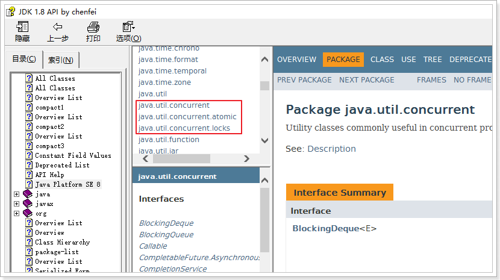
1.2. 进程和线程
进程：进程是一个具有一定独立功能的程序关于某个数据集合的一次运行活动。它是操作系统动态执行的基本单元，在传统的操作系统中，进程既是基本的分配单元，也是基本的执行单元。
线程：通常在一个进程中可以包含若干个线程，当然一个进程中至少有一个线程，不然没有存在的意义。线程可以利用进程所拥有的资源，在引入线程的操作系统中，通常都是把进程作为分配资源的基本单位，而把线程作为独立运行和独立调度的基本单位，由于线程比进程更小，基本上不拥有系统资源，故对它的调度所付出的开销就会小得多，能更高效的提高系统多个程序间并发执行的程度。
生活实例：
使用QQ，查看进程一定有一个QQ.exe的进程，我可以用qq和A文字聊天，和B视频聊天，给C传文件，给D发一段语言，QQ支持录入信息的搜索。
大四的时候写论文，用word写论文，同时用QQ音乐放音乐，同时用QQ聊天，多个进程。
word如没有保存，停电关机，再通电后打开word可以恢复之前未保存的文档，word也会检查你的拼写，两个线程：容灾备份，语法检查
1.3. 并行和并发
并发：同一时刻多个线程在访问同一个资源，多个线程对一个点
例子：小米9今天上午10点，限量抢购
春运抢票
电商秒杀…
并行：多项工作一起执行，之后再汇总
例子：泡方便面，电水壶烧水，一边撕调料倒入桶中
1.4. wait/sleep的区别
功能都是当前线程暂停，有什么区别？
wait：放开手去睡，放开手里的锁
sleep：握紧手去睡，醒了手里还有锁
wait是Object的方法，sleep是thread的方法
1.5. 创建线程回顾
创建线程常用两种方式：
- 继承Thread：java是单继承，资源宝贵，要用接口方式
- 实现Runable接口
继承Thread抽象类：
1 | public class MyThread extends Thread |
实现Runnable接口的方式：
- 新建类实现runnable接口。这种方法会新增类，有更好的方法
1 | class MyRunnable implements Runnable//新建类实现runnable接口 |
- 匿名内部类。
1 | new Thread(new Runnable() { |
1.6. lambda表达式
之前说了Runnable接口的两种实现方式，其实还有第三种：
- 创建类实现Runnable接口
- 编写匿名内部类实现Runnable接口
- lambda表达式：这种方法代码更简洁精炼
1 | new Thread(() -> { |
1.6.1. 什么是lambda
Lambda 是一个匿名函数，我们可以把 Lambda表达式理解为是一段可以传递的代码（将代码像数据一样进行传递）。可以写出更简洁、更灵活的代码。作为一种更紧凑的代码风格，使Java的语言表达能力得到了提升。
Lambda 表达式在Java 语言中引入了一个新的语法元素和操作符。这个操作符为 “->” ， 该操作符被称为 Lambda 操作符或剪头操作符。它将 Lambda 分为两个部分：
- 左侧：指定了 Lambda 表达式需要的所有参数
- 右侧：指定了 Lambda 体，即 Lambda 表达式要执行的功能
1.6.2. 案例
在一个方法中调用接口中的方法：传统写法
1 | interface Foo { |
接下来，要用lambda表达式改造。其实是改造main方法
1 | public static void main(String[] args) { |
改造口诀：拷贝小括号()，写死右箭头->，落地大括号{…}
思考：如果Foo接口有多个方法，还能使用lambda表达式吗？
1.6.3. 函数式接口
lambda表达式，必须是函数式接口，必须只有一个方法，如果接口只有一个方法java默认它为函数式接口。
为了正确使用Lambda表达式，需要给接口加个注解：@FunctionalInterface。如有两个方法，立刻报错。
Runnable接口为什么可以用lambda表达式？
1 |
|
发现Runnable接口上有一个注解：@FunctionalInterface
并且该接口只有一个方法：run()方法
其实，函数式接口必须只有一个方法，这个描述并不准确，它还允许有default方法和静态方法。
例如，在Foo接口中，又添加了sub方法和mul方法：
1 | interface Foo { |
1.6.4. 小结
lambda表达式实现接口的前提是
有且只有一个抽象方法，可以选择@FunctionalInterface注解增强函数式接口定义
改造口诀
拷贝小括号(形参列表)，写死右箭头 ->，落地大括号 {方法实现}
1.7. synchronized回顾
多线程编程模板上：
线程 操作 资源类
实现步骤：
- 创建资源类
- 资源类里创建同步方法、同步代码块
- 多线程调用
例子：卖票程序
创建工程，并添加了一个SaleTicket.java
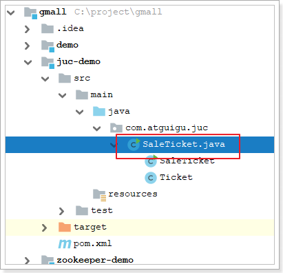
内容如下：
1 | class Ticket { |
1.8. synchronized的8锁问题
看下面这段儿代码，回答后面的8个问题：
1 | class Phone { |
多线程的8个问题：
- 标准访问，先打印短信还是邮件
- 停4秒在短信方法内，先打印短信还是邮件
- 普通的hello方法，是先打短信还是hello
- 现在有两部手机，先打印短信还是邮件
- 两个静态同步方法，1部手机，先打印短信还是邮件
- 两个静态同步方法，2部手机，先打印短信还是邮件
- 1个静态同步方法，1个普通同步方法，1部手机，先打印短信还是邮件
- 1个静态同步方法，1个普通同步方法，2部手机，先打印短信还是邮件
总结：
synchronized实现同步的基础：Java中的每一个对象都可以作为锁。具体表现为以下3种形式：
- 对于普通同步方法，锁是当前实例对象。
- 对于静态同步方法，锁是当前类的Class对象。
- 对于同步方法块，锁是Synchonized括号里配置的对象
当一个线程试图访问同步代码块时，它首先必须得到锁，退出或抛出异常时必须释放锁。
也就是说：
如果一个实例对象的非静态同步方法获取锁后，该实例对象的其他非静态同步方法必须等待获取锁的方法释放锁后才能获取锁；
不同实例对象的非静态同步方法因为用的是不同对象的锁，所以无须等待其他实例对象的非静态同步方法释放锁，就可以获取自己的锁。
所有的静态同步方法用的是同一把锁——类对象本身。不管是不是同一个实例对象，只要是一个类的对象，一旦一个静态同步方法获取锁之后，其他对象的静态同步方法，都必须等待该方法释放锁之后，才能获取锁。
而静态同步方法（Class对象锁）与非静态同步方法（实例对象锁）之间是不会有竞态条件的。
1.8.1 字节码分析
同步代码块
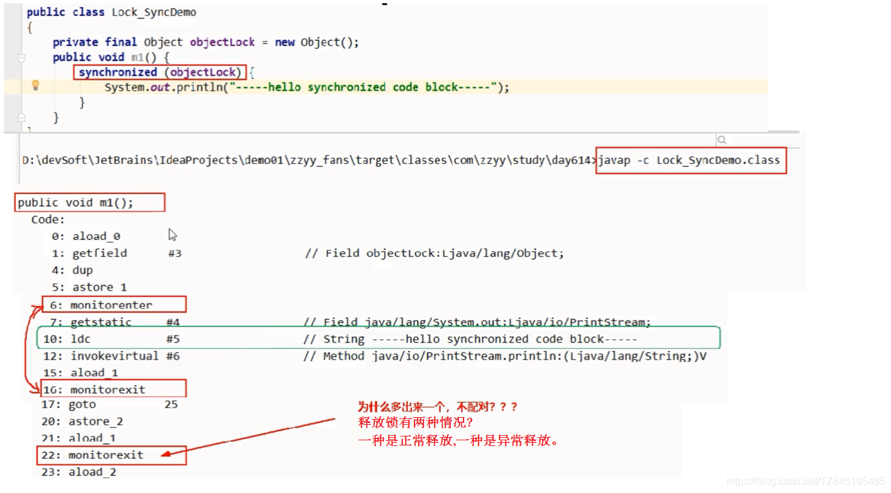
如果方法中直接抛出了异常处理，那么就是一个monitorenter和一个monitorexit
普通同步方法
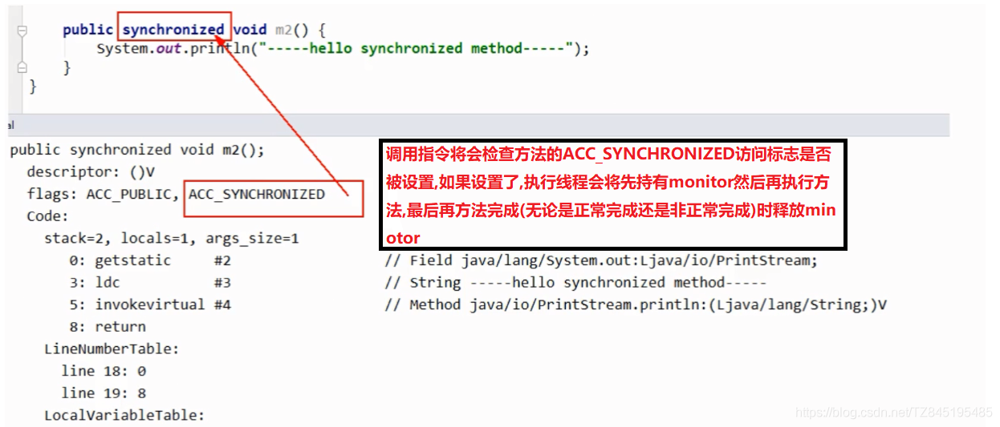
调用指令将会检查方法的ACC_SYNCHRONIZED访问标志是否被设置，如果设置了，执行线程会将先持有monitor然后再执行方法，最后再方法完成(无论是正常完成还是非正常完成)时释放minotor
静态同步方法
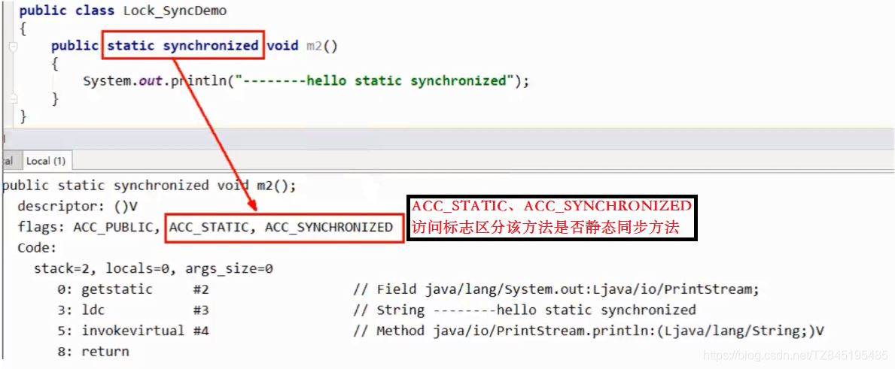
ACC_STATIC、ACC_SYNCHRONIZED访问标志区分该方法是否静态同步方法
1.8.2 synchronized锁的是什么

每个 Java 对象头中都包括 Monitor 对象(存储的指针的指向)，synchronized 也就是通过这一种方式获取锁，也就解释了为什么 synchronized() 括号里放任何对象都能获得锁🔒！
任何一个对象都可以成为一个锁，在HotSpot虚拟机中，monitor采用ObjectMonitor实现
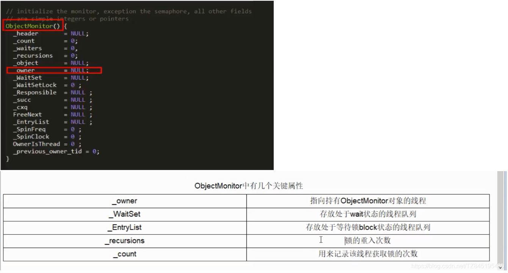
1.8.3 四大特性
原子性、可见性、有序性、可重入性
- 线程解锁前，必须把共享变量的最新值刷新到主内存中。
- 线程加锁前，将清空工作内存中共享变量的值，从而使用共享变量时需要从主内存中重新读取最新的值。
- volatile 的可见性都是通过内存屏障（Memnory Barrier）来实现的。
- synchronized 靠操作系统内核互斥锁实现，相当于 JMM 中的 lock、unlock。退出代码块时刷新变量到主内存。
1.9 synchronized 性能优化
在Java早期版本中，synchronized属于重量级锁，效率低下。因为监视器锁(monitor)是依赖于底层的操作系统的Mutex Lock来实现的，挂起线程和恢复线程都需要转入内核态去完成，阻塞或唤醒一个Java线程需要操作系统切换CPU状态来完成，这种状态切换需要耗费处理器时间
每一个Java对象自打娘胎里出来就带了一把看不见的锁，它叫做内部锁或者Monitor锁。 依赖于底层的操作系统的Mutex Lock。
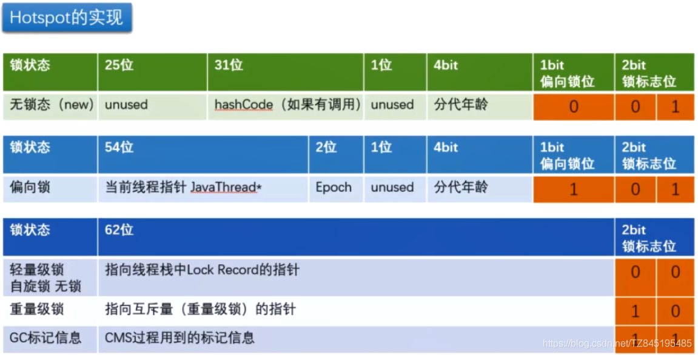
synchronized 锁有四种交替升级的状态：无锁、偏向锁、轻量级锁和重量级，这几个状态随着竞争情况逐渐升级。
偏向锁
当一段同步代码一直被同一个线程多次访问，由于只有一个线程，那么该线程在后续访问时便会自动获得锁(偏向锁)
同一个老顾客来访，直接老规矩行方便。偏向锁为了解决只有在一个线程执行同步时提高性能
原理：
- 在锁第一次被拥有的时候，记录下偏向线程ID。这样偏向线程就一直持有着锁(后续这个线程进入和退出这段加了同步锁的代码块时，不需要再次加锁和释放锁。而是直接比较对象头里面是否存储了指向当前线程的偏向锁)。
- 如果相等表示偏向锁是偏向于当前线程的，就不需要再尝试获得锁了，直到竞争发生才释放锁。以后每次同步，判断一下是否有偏向锁指向本身的ID，如果一致直接进入同步。无需每次加锁解锁都去CAS更新对象头。如果自始至终使用锁的线程只有一个，很明显偏向锁几乎没有额外开销，性能极高。
- 假如不一致意味着发生了竞争，锁已经不是总是偏向于同一个线程了，这时候可能需要升级变为轻量级锁，才能保证线程间公平竞争锁。偏向锁只有遇到其他线程尝试竞争偏向锁时，持有偏向锁的线程才会释放锁，线程是不会主动释放偏向锁的
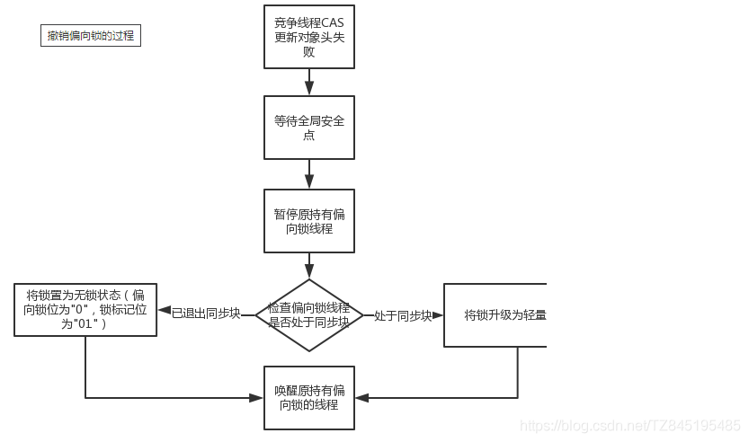
轻量锁
当锁是偏向锁的时候，被另一个线程所访问，偏向锁就会升级为轻量级锁，其他线程会通过自旋的形式尝试获取锁，不会阻塞，提高性能。
假如线程A已经拿到锁，这时线程B又来抢该对象的锁，由于该对象的锁已经被线程A拿到，当前该锁已是偏向锁了。
而线程B在争抢时发现对象头Mark Word中的线程ID不是线程B自己的线程ID(而是线程A)，那线程B就会进行CAS操作希望能获得锁。
此时线程B操作中有两种情况
如果锁获取成功，直接替换Mark Word中的线程ID为B自己的ID(A → B)，重新偏向于其他线程(即将偏向锁交给其他线程，相当于当前线程"被"释放了锁)，该锁会保持偏向锁状态，A线程Over，B线程上位
如果锁获取失败，则偏向锁升级为轻量级锁，此时轻量级锁由原持有偏向锁的线程持有，继续执行其同步代码，而正在竞争的线程B会进入自旋等待获得该轻量级锁。
锁膨胀->重量级锁
在尝试加轻量级锁的过程中，CAS 操作无法成功，可能是其它线程为此对象加上了轻量级锁（有竞争），这时需要进行锁膨胀，将轻量级锁变为重量级锁。
重量级锁竞争时，尝试获取锁的线程不会立即阻塞，可以使用自旋（默认 10 次）来进行优化，采用循环的方式去尝试获取锁，自旋失败的线程会进入阻塞状态
锁销除
锁消除是指对于被检测出不可能存在竞争的共享数据的锁进行消除，这是 JVM 即时编译器的优化
锁消除主要是通过逃逸分析来支持，如果堆上的共享数据不可能逃逸出去被其它线程访问到，那么就可以把它们当成私有数据对待，也就可以将它们的锁进行消除（同步消除：JVM 逃逸分析）
锁粗化
对相同对象多次加锁，导致线程发生多次重入，频繁的加锁操作就会导致性能损耗，可以使用锁粗化方式优化
如果虚拟机探测到一串的操作都对同一个对象加锁，将会把加锁的范围扩展（粗化）到整个操作序列的外部
大图总结

2. Lock锁
首先看一下JUC的重磅武器——锁（Lock）
相比同步锁，JUC包中的Lock锁的功能更加强大，它提供了各种各样的锁（公平锁，非公平锁，共享锁，独占锁……），所以使用起来很灵活。
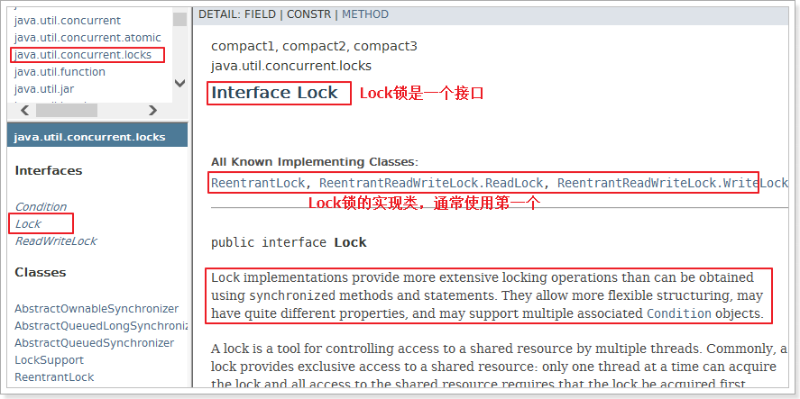
翻译过来就是：
锁实现提供了比使用同步方法和语句可以获得的更广泛的锁操作。它们允许更灵活的结构，可能具有非常不同的属性，并且可能支持多个关联的条件对象。
Lock是一个接口，这里主要有三个实现：ReentrantLock、ReentrantReadWriteLock.ReadLock、ReentrantReadWriteLock.WriteLock
2.1. ReentrantLock可重入锁
ReentrantLock使用方式参照官方文档：
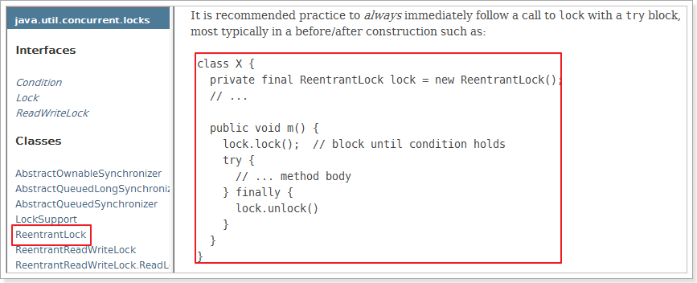
使用ReentrantLock改造卖票程序：只需改造sale()方法
1 | class Ticket{ |
2.1.1. 测试可重入性
可重入锁又名递归锁，是指在同一个线程在外层方法获取锁的时候，再进入该线程的内层方法会自动获取锁。Java中ReentrantLock和synchronized都是可重入锁，可重入锁的一个优点是可一定程度避免死锁。
例如下列伪代码：
1 | class A{ |
A类中有两个普通同步方法，都需要对象a的锁。如果是不可重入锁的话，aa方法首先获取到锁，aa方法在执行的过程中需要调用bb方法，此时锁被aa方法占有，bb方法无法获取到锁，这样就会导致bb方法无法执行，aa方法也无法执行，出现了死锁情况。可重入锁可避免这种死锁的发生。
1 | class Ticket{ |
可以发现程序可以正常执行。。。说明该锁确实可重入。
1 | AAA买票成功，当前剩余：19 |
2.1.2. 测试公平锁
ReentrantLock还可以实现公平锁。所谓公平锁，也就是在锁上等待时间最长的线程将获得锁的使用权。通俗的理解就是谁排队时间最长谁先执行获取锁。
1 | private ReentrantLock lock = new ReentrantLock(true); |
测试结果：
1 | AAA买票成功，当前剩余：19 |
可以看到ABC三个线程是按顺序买票成功的。
2.1.3. 限时等待
这个是什么意思呢？也就是通过我们的tryLock方法来实现，可以选择传入时间参数，表示等待指定的时间，无参则表示立即返回锁申请的结果：true表示获取锁成功，false表示获取锁失败。我们可以将这种方法用来解决死锁问题。
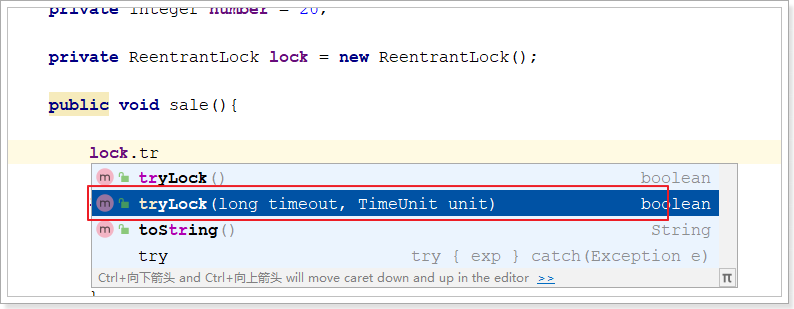
2.1.4. ReentrantLock和synchronized区别
隐式显式、可中断、公平性、性能
（1）synchronized是独占锁，加锁和解锁的过程自动进行，易于操作，但不够灵活。ReentrantLock也是独占锁，加锁和解锁的过程需要手动进行，不易操作，但非常灵活。
（2）synchronized可重入，因为加锁和解锁自动进行，不必担心最后是否释放锁；ReentrantLock也可重入，但加锁和解锁需要手动进行，且次数需一样，否则其他线程无法获得锁。
- 等待可中断 :
ReentrantLock提供了一种能够中断等待锁的线程的机制，通过lock.lockInterruptibly()来实现这个机制。也就是说正在等待的线程可以选择放弃等待，改为处理其他事情。 - 可实现公平锁 :
ReentrantLock可以指定是公平锁还是非公平锁。而synchronized只能是非公平锁。所谓的公平锁就是先等待的线程先获得锁。ReentrantLock默认情况是非公平的，可以通过ReentrantLock类的ReentrantLock(boolean fair)构造方法来制定是否是公平的。 - 可实现选择性通知（锁可以绑定多个条件）:
synchronized关键字与wait()和notify()/notifyAll()方法相结合可以实现等待/通知机制。ReentrantLock类当然也可以实现，但是需要借助于Condition接口与newCondition()方法。 - 其他：synchronized 依赖于 JVM 而 ReentrantLock 依赖于 API
2.2. ReentrantReadWriteLock读写锁
在并发场景中用于解决线程安全的问题，我们几乎会高频率的使用到独占式锁，通常使用java提供的关键字synchronized或者concurrents包中实现了Lock接口的ReentrantLock。它们都是独占式获取锁，也就是在同一时刻只有一个线程能够获取锁。而在一些业务场景中，大部分只是读数据，写数据很少，如果仅仅是读数据的话并不会影响数据正确性（出现脏读），而如果在这种业务场景下，依然使用独占锁的话，很显然这将是出现性能瓶颈的地方。针对这种读多写少的情况，java还提供了另外一个实现Lock接口的ReentrantReadWriteLock(读写锁)。读写锁允许同一时刻被多个读线程访问，但是在写线程访问时，所有的读线程和其他的写线程都会被阻塞。
读写锁的特点：
- 写写不可并发
- 读写不可并发
- 读读可以并发
2.2.1. 重写读写问题
接下来以缓存为例用代码演示读写锁，重现问题：
1 | class MyCache{ |
打印结果：多执行几次，有很大概率不会出现问题
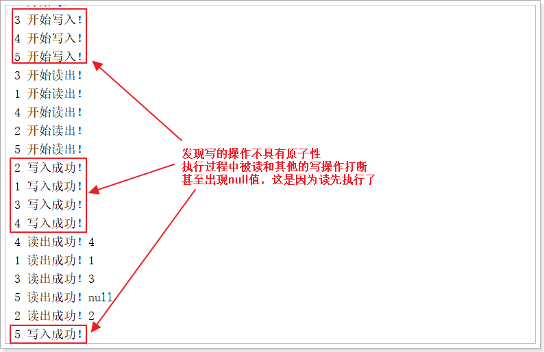
2.2.2. 读写锁的使用
改造MyCache，加入读写锁：
1 | class MyCache{ |
2.2.3. 锁降级
什么是锁降级，锁降级就是从写锁降级成为读锁。在当前线程拥有写锁的情况下，再次获取到读锁，随后释放写锁的过程就是锁降级。这里可以举个例子：
1 | public void test(){ |
打印效果：
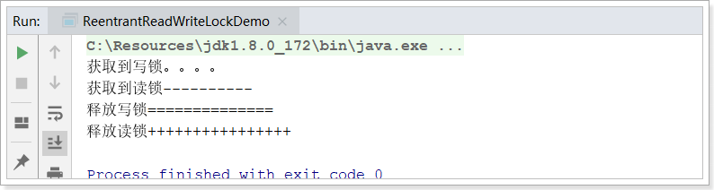
2.2.4. 读写锁总结
-
支持公平/非公平策略
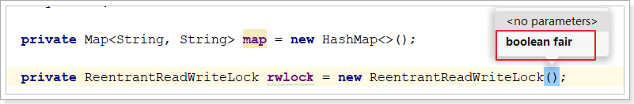
-
支持可重入
- 同一读线程在获取了读锁后还可以获取读锁
- 同一写线程在获取了写锁之后既可以再次获取写锁又可以获取读锁
-
支持锁降级，不支持锁升级
-
读写锁如果使用不当，很容易产生“饥饿”问题：
在读线程非常多，写线程很少的情况下，很容易导致写线程“饥饿”，虽然使用“公平”策略可以一定程度上缓解这个问题，但是“公平”策略是以牺牲系统吞吐量为代价的。
-
Condition条件支持
写锁可以通过
newCondition()方法获取Condition对象。但是读锁是没法获取Condition对象，读锁调用newCondition()方法会直接抛出UnsupportedOperationException。
3. 线程间通信
面试题：两个线程打印
两个线程，一个线程打印1-52，另一个打印字母A-Z打印顺序为12A34B…5152Z，要求用线程间通信
3.1. 回顾线程通信
先来简单案例：
两个线程操作一个初始值为0的变量，实现一个线程对变量增加1，一个线程对变量减少1，交替10轮。
线程间通信模型：
- 生产者+消费者
- 通知等待唤醒机制
多线程编程模板中：
-
判断
-
干活
-
通知
代码实现：
1 | class ShareDataOne { |
部分打印结果：AAA和BBB交互执行，执行结果是1 0 1 0… 一共10轮
1 | AAA: 1 |
如果换成4个线程会怎样？
改造mian方法，加入CCC和DDD两个线程：
1 | public static void main(String[] args) { |
打印结果，依然会有概率是，10101010…。
但是，多执行几次，也会出现错乱的现象：
1 | AAA: 1 |
3.2. 虚假唤醒
换成4个线程会导致错误，虚假唤醒
原因：在java多线程判断时，不能用if，程序出事出在了判断上面。
**注意，消费者被唤醒后是从wait()方法（被阻塞的地方）后面执行，而不是重新从同步块开头。**从阻塞态到就绪态再到运行态没有进行判断，我们只需要让其每次得到操作权时都进行判断就可以了 。
如下图：
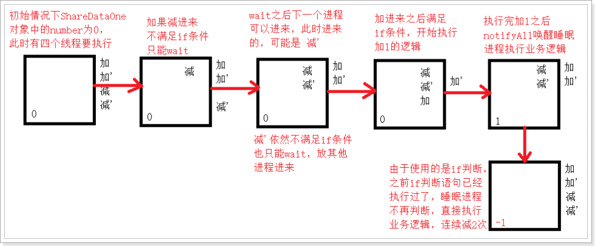
解决 虚假唤醒：查看API，java.lang.Object的wait方法
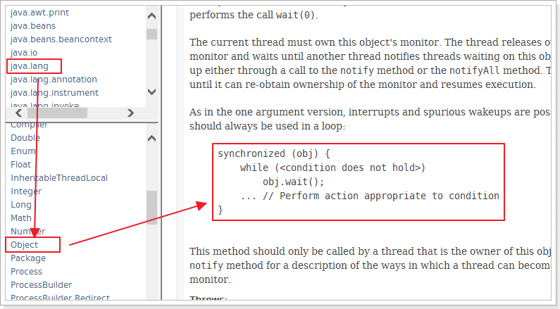
中断和虚假唤醒是可能产生的，所以要用loop循环，if只判断一次，while是只要唤醒就要拉回来再判断一次。
if换成while
1 | class ShareDataOne { |
再次测试，完美解决
3.3. 线程通信（Condition）
对标synchronized：

Condition：查看API，java.util.concurrent.locks
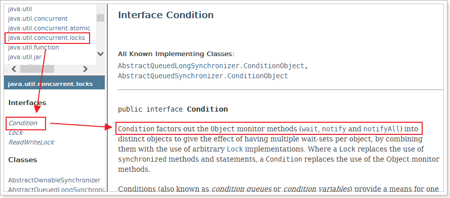
并提供了实现案例：
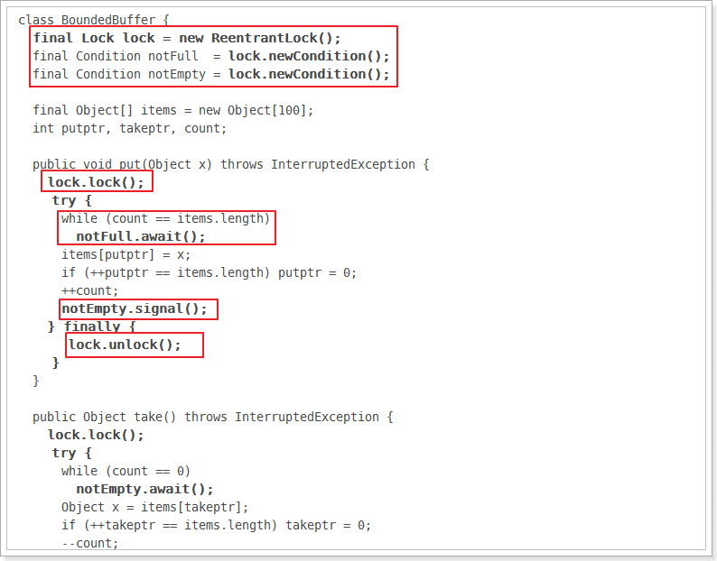
使用Condition实现线程通信，改造之前的代码（只需要改造ShareDataOne）：删掉increment和decrement方法的synchronized
1 | class ShareDataOne { |
3.4. 定制化调用通信
案例：
多线程之间按顺序调用，实现A->B->C。三个线程启动，要求如下：
AA打印5次，BB打印10次，CC打印15次
接着
AA打印5次，BB打印10次，CC打印15次
。。。打印10轮
分析实现方式：
- 有一个锁Lock，3把钥匙Condition
- 有顺序通知（切换线程），需要有标识位
- 判断标志位
- 输出线程名 + 内容
- 修改标识符，通知下一个
具体实现：
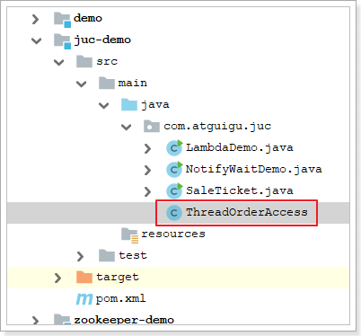
内容：
1 | class ShareDataTwo { |
8. ThreadPool线程池
例子：
10年前单核CPU电脑，假的多线程，像马戏团小丑玩多个球，CPU需要来回切换。
现在是多核电脑，多个线程各自跑在独立的CPU上，不用切换效率高。
线程池的优势：线程复用；控制最大并发数；管理线程。
- 降低资源消耗。通过重复利用已创建的线程降低线程创建和销毁造成的销耗。
- 提高响应速度。当任务到达时，任务可以不需要等待线程创建就能立即执行。
- 提高线程的可管理性。线程是稀缺资源，如果无限制的创建，不仅会销耗系统资源，还会降低系统的稳定性，使用线程池可以进行统一的分配，调优和监控。
8.1. 架构说明
Java中的线程池是通过Executor框架实现的，该框架中用到了Executor，ExecutorService，ThreadPoolExecutor这几个类。

Executor接口是顶层接口，只有一个execute方法，过于简单。通常不使用它，而是使用ExecutorService接口：

那么问题来了，怎么创建一个连接池对象呢？通常使用Executors工具类
8.2. Executors工具类
架构图可以看到Executors工具类，有没有联想到Collections，Arrays等。没错，可以用它快速创建线程池。
1 | List list = Arrays.asList(""); |
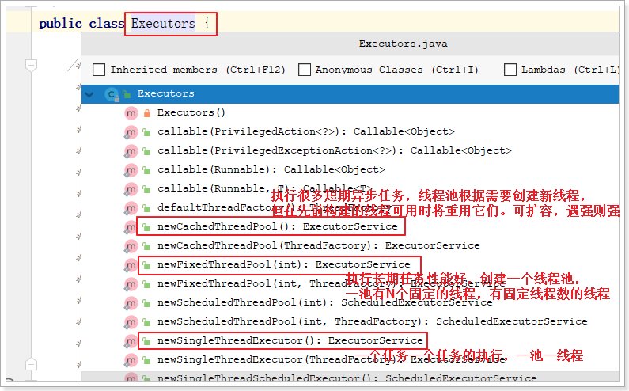
直接编码演示：每种连接池的效果
1 | public class ThreadPoolDemo { |
8.3. 底层原理
上述案例中的三个方法的本质都是ThreadPoolExecutor的实例化对象，只是具体参数值不同。
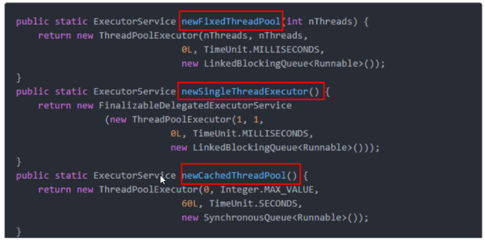
8.3.1. 线程池的7个重要参数
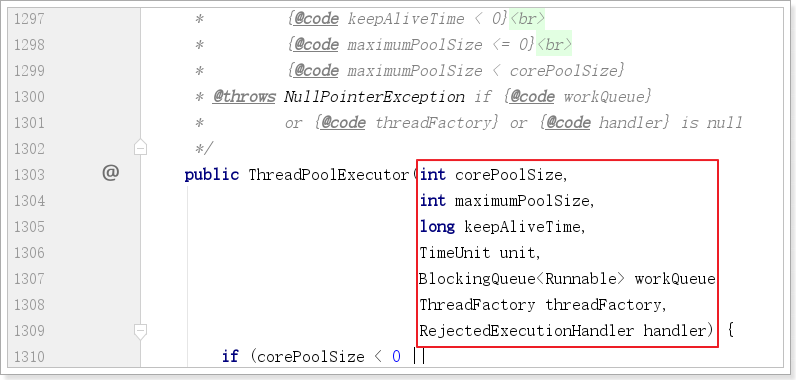
- corePoolSize：线程池中的常驻核心线程数
- maximumPoolSize：线程池中能够容纳同时 执行的最大线程数，此值必须大于等于1
- keepAliveTime：多余的空闲线程的存活时间 当前池中线程数量超过corePoolSize时，当空闲时间达到keepAliveTime时，多余线程会被销毁直到 只剩下corePoolSize个线程为止
- unit：keepAliveTime的单位
- workQueue：任务队列，被提交但尚未被执行的任务
- threadFactory：表示生成线程池中工作线程的线程工厂， 用于创建线程，一般默认的即可
- handler：拒绝策略，表示当队列满了，并且工作线程大于 等于线程池的最大线程数（maximumPoolSize）时，如何来拒绝 请求执行的runnable的策略

8.3.2. 线程池底层工作原理
具体流程：

重要的事情说三遍：以下重要：以下重要：以下重要：
-
在创建了线程池后，线程池中的线程数为零。
-
当调用execute()方法添加一个请求任务时，线程池会做出如下判断：
- 如果正在运行的线程数量小于corePoolSize，那么马上创建线程运行这个任务；
- 如果正在运行的线程数量大于或等于corePoolSize，那么将这个任务放入队列；
- 如果这个时候队列满了且正在运行的线程数量还小于maximumPoolSize，那么还是要创建非核心线程立刻运行这个任务；
- 如果队列满了且正在运行的线程数量大于或等于maximumPoolSize，那么线程池会启动饱和拒绝策略来执行。
-
当一个线程完成任务时，它会从队列中取下一个任务来执行。
-
当一个线程无事可做超过一定的时间（keepAliveTime）时，线程会判断：
如果当前运行的线程数大于corePoolSize，那么这个线程就被停掉。
所以线程池的所有任务完成后，它最终会收缩到corePoolSize的大小。
8.3.3. 拒绝策略
一般我们创建线程池时，为防止资源被耗尽，任务队列都会选择创建有界任务队列，但这种模式下如果出现任务队列已满且线程池创建的线程数达到你设置的最大线程数时，这时就需要你指定ThreadPoolExecutor的RejectedExecutionHandler参数即合理的拒绝策略，来处理线程池"超载"的情况。
ThreadPoolExecutor自带的拒绝策略如下：
- AbortPolicy(默认)：直接抛出RejectedExecutionException异常阻止系统正常运行
- CallerRunsPolicy：“调用者运行”一种调节机制，该策略既不会抛弃任务，也不会抛出异常，而是将某些任务回退到调用者，从而降低新任务的流量。
- DiscardOldestPolicy：抛弃队列中等待最久的任务，然后把当前任务加人队列中 尝试再次提交当前任务。
- DiscardPolicy：该策略默默地丢弃无法处理的任务，不予任何处理也不抛出异常。 如果允许任务丢失，这是最好的一种策略。
以上内置的策略均实现了RejectedExecutionHandler接口，也可以自己扩展RejectedExecutionHandler接口，定义自己的拒绝策略
8.4. 自定义线程池
在《阿里巴巴java开发手册》中指出了线程资源必须通过线程池提供，不允许在应用中自行显示的创建线程，这样一方面是线程的创建更加规范，可以合理控制开辟线程的数量；另一方面线程的细节管理交给线程池处理，优化了资源的开销。而线程池不允许使用Executors去创建，而要通过ThreadPoolExecutor方式，这一方面是由于jdk中Executor框架虽然提供了如newFixedThreadPool()、newSingleThreadExecutor()、newCachedThreadPool()等创建线程池的方法，但都有其局限性，不够灵活；使用ThreadPoolExecutor有助于大家明确线程池的运行规则，创建符合自己的业务场景需要的线程池，避免资源耗尽的风险。
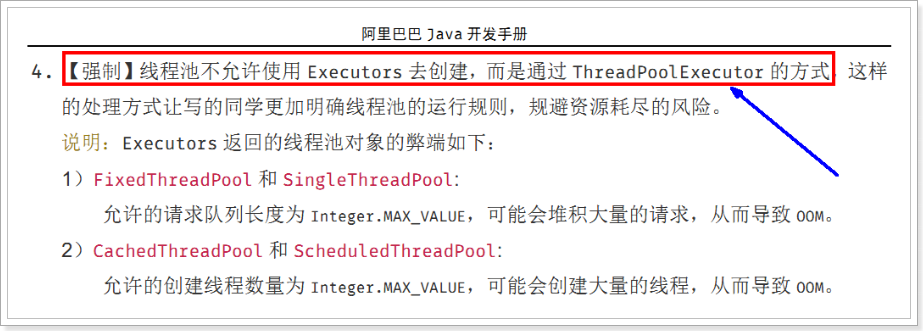
自定义线程池：
1 | public class ThreadPoolDemo { |
9. 多线程高并发底层原理
计算机运行架构图，如下：
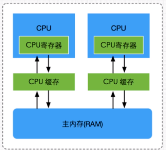
由于cpu的运行程序速度远大于主存储的速度，所以会在主存RAM和CPU之间加多级高速缓存，缓存的速度接近cpu的运行速度，这样会大大提高计算机的运行速度。
9.1. java内存模型（JMM）
JMM即为JAVA 内存模型（java memory model）。因为在不同的硬件生产商和不同的操作系统下，内存的访问逻辑有一定的差异，结果就是当你的代码在某个系统环境下运行良好，并且线程安全，但是换了个系统就出现各种问题。
Java内存模型，就是为了屏蔽系统和硬件的差异，让一套代码在不同平台下能到达相同的访问结果。
一个变量如何从主内存拷贝到工作内存、如何从工作内存同步到主内存之间的实现：
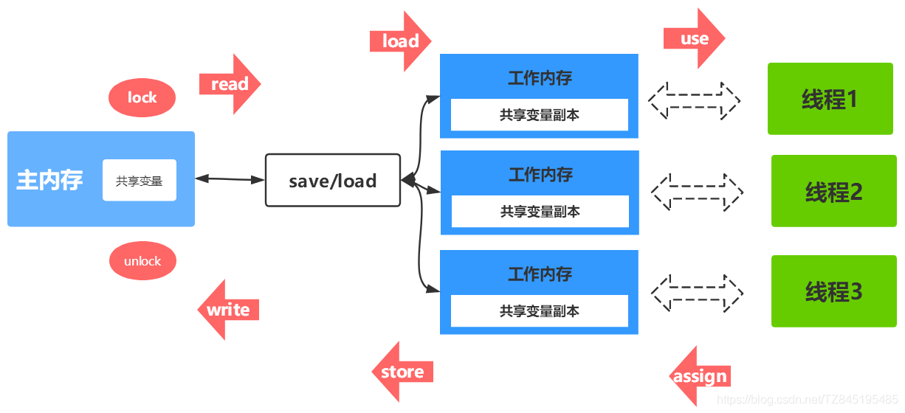
不同的线程间无法访问对方的工作内存，线程间的通信(传值)必须通过主内存来完成
JMM规定了内存主要划分为主内存和工作内存两种。
主内存：保存了所有的变量。
共享变量：如果一个变量被多个线程使用，那么这个变量会在每个线程的工作内存中保有一个副本，这种变量就是共享变量。
工作内存：每个线程都有自己的工作内存，线程独享，保存了线程用到的变量副本（主内存共享变量的一份拷贝）。工作内存负责与线程交互，也负责与主内存交互。
此处的主内存和工作内存跟JVM内存划分（堆、栈、方法区）是在不同的维度上进行的，如果非要对应起来，主内存对应的是Java堆中的对象实例部分，工作内存对应的是栈中的部分区域，从更底层的来说，主内存对应的是硬件的物理内存，工作内存对应的是寄存器和高速缓存。
JMM对共享内存的操作做出了如下两条规定：
- 线程对共享内存的所有操作都必须在自己的工作内存中进行，不能直接从主内存中读写；
- 不同线程无法直接访问其他线程工作内存中的变量，因此共享变量的值传递需要通过主内存完成。
内存模型的三大特性：
- 原子性：即不可分割性。比如 a=0；（a非long和double类型） 这个操作是不可分割的，那么我们说这个操作是原子操作。再比如：a++； 这个操作实际是a = a + 1；是可分割的，所以他不是一个原子操作。非原子操作都会存在线程安全问题，需要使用同步技术（sychronized）或者锁（Lock）来让它变成一个原子操作。一个操作是原子操作，那么我们称它具有原子性。java的concurrent包下提供了一些原子类，我们可以通过阅读API来了解这些原子类的用法。比如：AtomicInteger、AtomicLong、AtomicReference等。
- **可见性：**每个线程都有自己的工作内存，所以当某个线程修改完某个变量之后，在其他的线程中，未必能观察到该变量已经被修改。**在 Java 中 volatile、synchronized 和 final 实现可见性。**volatile只能让被他修饰内容具有可见性，但不能保证它具有原子性。
- **有序性：**java的有序性跟线程相关。一个线程内部所有操作都是有序的，如果是多个线程所有操作都是无序的。因为JMM的工作内存和主内存之间存在延迟，而且java会对一些指令进行重新排序。volatile和synchronized可以保证程序的有序性，很多程序员只理解这两个关键字的执行互斥，而没有很好的理解到volatile和synchronized也能保证指令不进行重排序。
- volatile关键字本身就包含了禁止指令重排序的语义
- synchronized则是由“一个变量在同一个时刻只允许一条线程对其进行lock操作”这条规则获得的，这个规则决定了持有同一个锁的两个同步块只能串行地进入
9.2. volatile关键字
volatile 关键字可以保证变量的可见性，如果我们将变量声明为 volatile ，这就指示 JVM，这个变量是共享且不稳定的，每次使用它都到主存中进行读取。
不能保证数据的原子性。 很多人会误认为自增操作 inc++ 是原子性的，实际上，inc++ 其实是一个复合操作，包括三步：
- 读取 inc 的值。
- 对 inc 加 1。
- 将 inc 的值写回内存。
volatile 是无法保证这三个操作是具有原子性的
防止 JVM 的指令重排序。 在对这个变量进行读写操作的时候，会通过插入特定的 内存屏障 的方式来禁止指令重排序。
9.2.1. 验证可见性
验证volatile关键字保证内存可见性：
1 | public class VolatileDemo { |
这是没有添加volatile关键字，打印效果如下：
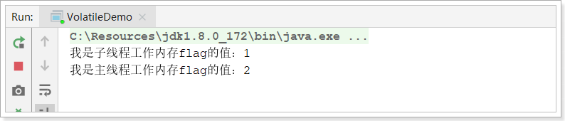
子线程读取不到主线程修改后的flag值，陷入死循环程序无法结束。
接下来添加volatile关键字再试试：
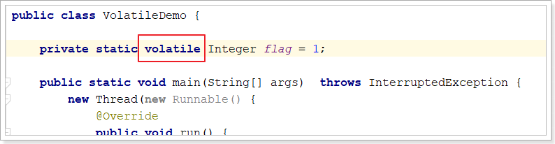
打印结果如下：子线程可以读取的新值并结束子线程
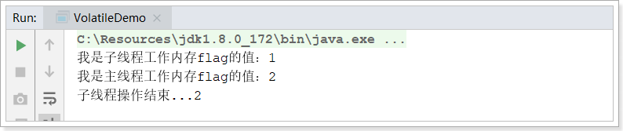
9.2.2. 验证有序性
1 | public class VolatileOrderDemo { |
正常情况下：
如果thread1先执行，xy的值是[0， 1] ；a=1 x=b {b:0} b=1 y=a {a:1}; x=0，y=1
如果thread2先执行是[1， 0] b = 1 y=a {a:0} a=1 x=b{b:1}
如果出现[0， 0]，则说明进行了指令重排{因为JMM的工作内存和主内存之间存在延迟}。
thread1.b = main.b
thread1.a = main.a
thread1.x = main.x
thread1.y = main.y
a = 1; x = b;
1: thread1.a =1;
2: main.a=thread1.a
3: thread1.x = thread1.b;
4: main.x=thread1.x
a: thread2.b = main.b
b: thread2.a = main.a
c: thread2.x = main.x
d: thread2.y = main.y
b = 1; y = a;
5: thread2.b = 1;
6: main.b = thread2.b
7: thread2.y = thread2.a;
8: main.y=thread2.y
0 ：0 4，8重排 1，b，2，3，5，6，7再 4，8
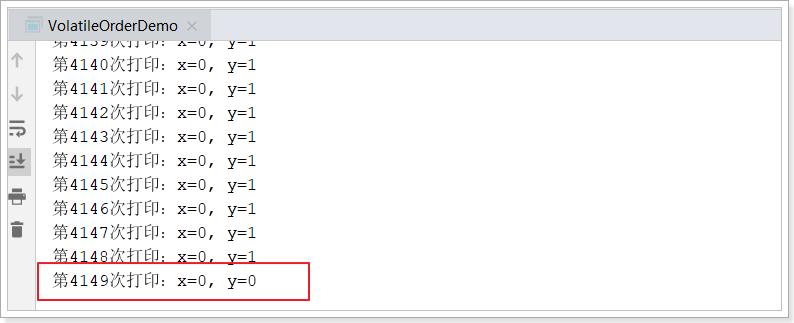
给a， b添加volatile关键字
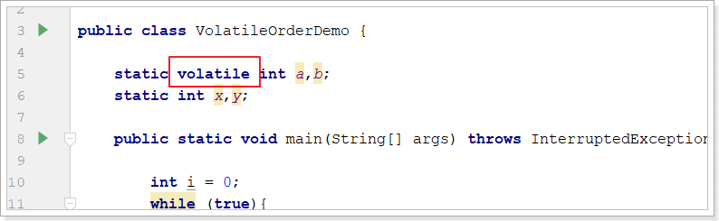
9.2.3. 验证不具备原子性
编写如下程序：
1 | class DataOne{ |
执行效果如下：
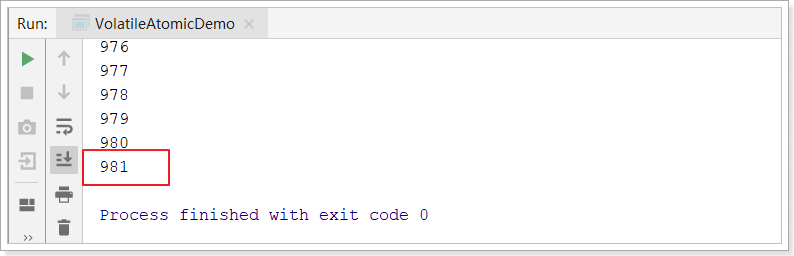
1000个线程执行++number操作，如果++number操作具备原子性，最后的值应该是1000。说明++number不具备原子性。
接下来，给number添加volatile关键字：
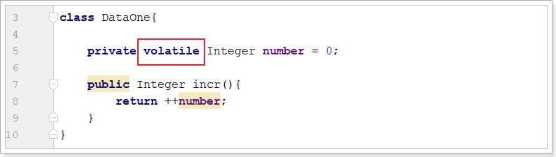
测试结果依然不是1000，如下：
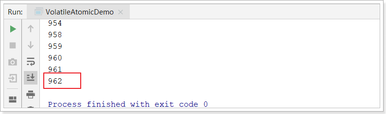
说明volatile关键字不能保证原子性。
给incr方法添加同步锁试试：
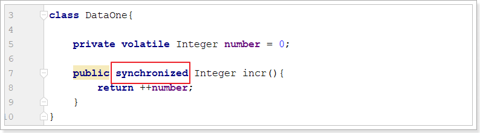
测试：
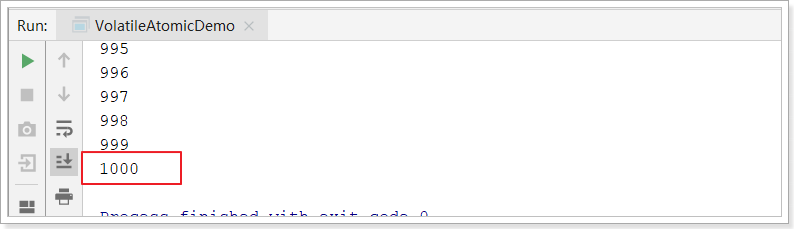
效果完美！
9.2.4. volatile原理
Java语言提供了一种稍弱的同步机制，即volatile变量，用来确保将变量的更新操作通知到其他线程。当把变量声明为volatile类型后，编译器与运行时都会注意到这个变量是共享的，因此不会将该变量上的操作与其他内存操作一起重排序。
在访问volatile变量时不会执行加锁操作，因此也就不会使执行线程阻塞，因此volatile变量是一种比sychronized关键字更轻量级的同步机制。
当一个变量定义为 volatile 之后，将具备两种特性：
-
保证此变量对所有的线程的可见性。
-
禁止指令重排序优化。有volatile修饰的变量，赋值后多执行了一个“load addl $0x0， (%esp)”操作，这个操作相当于一个内存屏障（指令重排序时不能把后面的指令重排序到内存屏障之前的位置），只有一个CPU访问内存时，并不需要内存屏障。
-
不保证变量的原子性
volatile 性能：volatile 的读性能消耗与普通变量几乎相同，但是写操作稍慢，因为它需要在本地代码中插入许多内存屏障指令来保证处理器不发生乱序执行。
9.2.5. Happen-Before（了解）
在常规的开发中，如果我们通过上述规则来分析一个并发程序是否安全，估计脑壳会很疼。因为更多时候，我们是分析一个并发程序是否安全，其实都依赖Happen-Before原则进行分析。Happen-Before被翻译成先行发生原则，意思就是当A操作先行发生于B操作，则在发生B操作的时候，操作A产生的影响能被B观察到，“影响”包括修改了内存中的共享变量的值、发送了消息、调用了方法等。
Happen-Before的规则有以下几条：
- 程序次序规则（Program Order Rule）：在一个线程内一段代码的**执行结果是有序的。**就算还会指令重排，但是随便它怎么排，结果是按照我们代码的顺序生成的不会变！
- 管程锁定规则（Monitor Lock Rule）：就是无论是在单线程环境还是多线程环境，对于同一个锁来说，一个线程对这个锁解锁之后，另一个线程获取了这个锁都能看到前一个线程的操作结果！(管程是一种通用的同步原语，synchronized就是管程的实现）
- volatile变量规则（volatile Variable Rule）：对同一个volatile的变量，先行发生的写操作，肯定早于后续发生的读操作
- 线程启动规则（Thread Start Rule）：Thread对象的start()方法先行发生于此线程的每一个动作
- 线程终止规则（Thread Termination Rule）：线程中的所有操作都先行发生于对此线程的终止检测，我们可以通过Thread.join()方法结束、Thread.isAlive()的返回值等手段检测到线程已经终止执行。
- 线程中断规则（Thread Interruption Rule）：对线程的interruption()调用，先于被调用的线程检测中断事件(Thread.interrupted())的发生
- 对象终结规则（Finalizer Rule）：一个对象的初始化完成（构造函数执行结束）先行发生于它的finalize()方法的开始。
- 传递性（Transitivity）：如果操作A先于操作B、操作B先于操作C，则操作A先于操作C
以上这些规则保障了happen-before的顺序，如果不符合以上规则，那么在多线程环境下就不能保证执行顺序等同于代码顺序。通过这些条件的判定，仍然很难判断一个线程是否能安全执行，线程安全多数依赖于工具类的安全性来保证。想提高自己对线程是否安全的判断能力，必然需要理解所使用的框架或者工具的实现，并积累线程安全的经验。
9.3. CAS
CAS：Compare and Swap。比较并交换的意思。CAS操作有3个基本参数：内存地址A，旧值B，新值C。它的作用是将指定内存地址A的内容与所给的旧值B相比，如果相等，则将其内容替换为指令中提供的新值C；如果不等，则更新失败。类似于修改登陆密码的过程。当用户输入的原密码和数据库中存储的原密码相同，才可以将原密码更新为新密码，否则就不能更新。
**CAS是解决多线程并发安全问题的一种乐观锁算法。**因为它在对共享变量更新之前，会先比较当前值是否与更新前的值一致，如果一致则更新，如果不一致则循环执行（称为自旋锁），直到当前值与更新前的值一致为止，才执行更新。
Unsafe类是CAS的核心类，提供硬件级别的原子操作（目前所有CPU基本都支持硬件级别的CAS操作）。
1 | // 对象、对象的属性地址偏移量、预期值、修改值 |
Unsafe简单demo：
1 | public class UnsafeDemo { |
9.3.1. 基本代码演示
在JUC下有个atomic包，有很多原子操作的包装类：
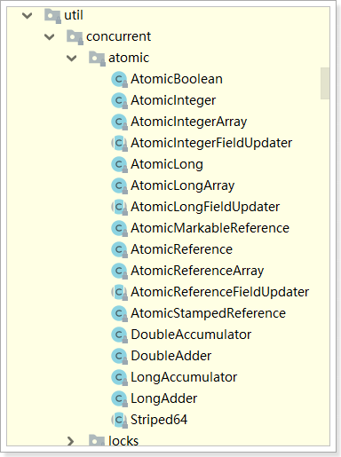
这里以AtomicInteger这个类来演示：
1 | public class CasDemo { |
输出结果如下：
1 | 第一次更新：true |
结果分析：
1 | 第一次更新：i的值（1）和预期值（1）相同，所以执行了更新操作，把i的值更新为200 |
9.3.2. 验证原子性
还是改造之前的验证volatile关键字的案例如下：
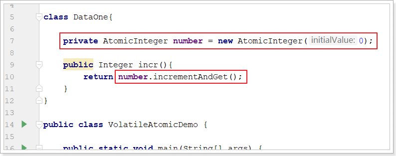
测试结果如下：
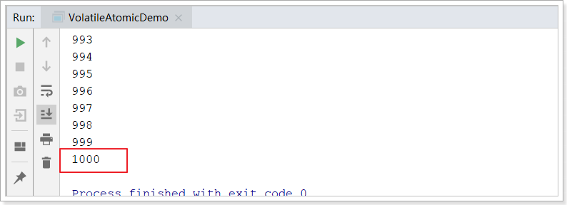
也很完美！
9.3.3. 缺点
开销大：在并发量比较高的情况下，如果反复尝试更新某个变量，却又一直更新不成功，会给CPU带来较大的压力。可以用LongAdder代替。
ABA问题：当变量从A修改为B再修改回A时，变量值等于期望值A，但是无法判断是否修改，CAS操作在ABA修改后依然成功。
不能保证代码块的原子性：CAS机制所保证的只是一个变量的原子性操作，而不能保证整个代码块的原子性。
9.3.4 原子类应用
ABA问题解决
1 | private static AtomicStampedReference<Integer> stampedReference = new AtomicStampedReference<>(100， 1); |
手搓自旋锁
1 | public static void lock() { |
9.3.5 LongAdder源码
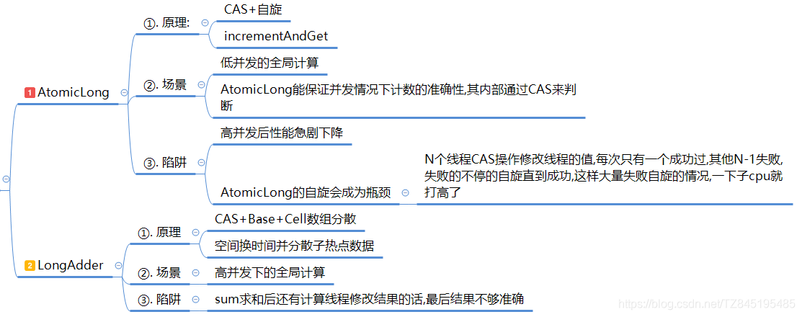
热点分散
多个线程需要同时对value进行操作时候，可以对线程id进行hash得到hash值，再根据hash值映射到这个数组cells的某个下标，再对该下标所对应的值进行自增操作。
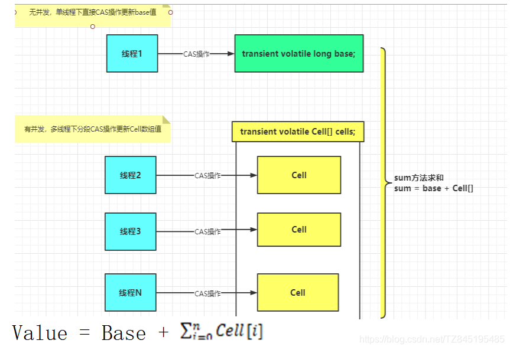
父类Striped64 部分成员变量
1 | //CPU数量，即Cells数组的最大长度 |
内部是一个Base+一个Cell[ ]数组 。sum( )会将所有cell数组中的value和base累加作为返回值，核心的思想就是将之前AtomicLong一个value的更新压力分散到多个value中去，从而降级更新热点 。
9.4. AQS
AbstractQueuedSynchronizer抽象队列同步器简称AQS，它是实现同步器的基础组件（框架），juc下面Lock（ReentrantLock、ReentrantReadWriteLock等）的实现以及一些并发工具类（Semaphore、CountDownLatch、CyclicBarrier等）就是通过AQS来实现的。具体用法是通过继承AQS实现其模板方法，然后将子类作为同步组件的内部类。
But
StampLock不是基于AQS实现的。
加锁会导致阻塞，有阻塞就需要排队，实现排队必然需要队列。如果共享资源被占用，就需要一定的阻塞等待唤醒机制来保证锁分配。这个机制主要用的是CLH队列的变体实现的，将暂时获取不到锁的线程加入到队列中，这个队列就是AQS的抽象表现。
核心思想是，如果被请求的共享资源空闲，则将当前请求资源的线程设置为有效的工作线程，并且将共享资源设置为锁定状态。如果 被请求的共享资源被占用，那么就需要一套线程阻塞等待以及被唤醒时锁分配的机制，这个机制 AQS 是用 CLH 队列锁 实现的，即将暂时获取不到锁的线程加入到队列中。
CLH（Craig，Landin and Hagersten），是一种基于链表的可扩展、高性能、公平的自旋锁。
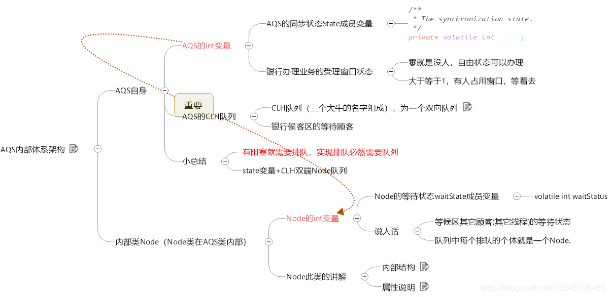
AB两个线程进来了以后，总共有3个Node节点，其中队列的第一个是傀儡节点(哨兵节点) 。哨兵节点并不存储任何信息，只是占位。
内部类Node的成员变量：
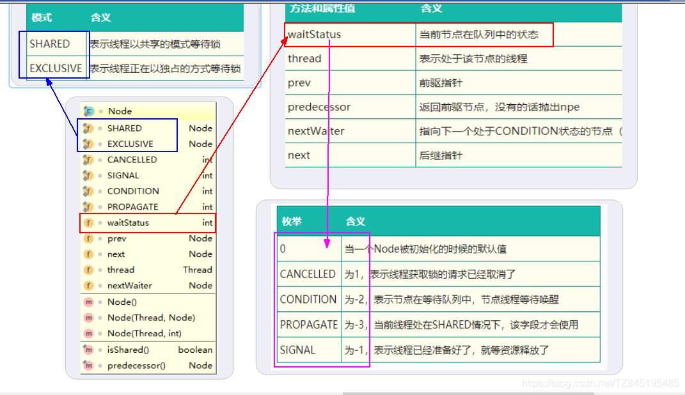
9.4.1. 框架结构
AQS框架结构如下：

AQS维护了一个volatile语义(支持多线程下的可见性)的共享资源变量state和一个FIFO（first-in-first-out）线程等待队列(多线程竞争state资源被阻塞时，会进入此队列)。
9.4.2. 基于AQS实现锁的思路
AQS将大部分的同步逻辑均已经实现好，继承的自定义同步器只需要实现state的获取(acquire)和释放(release)的逻辑代码就可以，主要包括下面方法：
- tryAcquire(int)：独占方式。尝试获取资源，成功则返回true，失败则返回false。
- tryRelease(int)：独占方式。尝试释放资源，成功则返回true，失败则返回false。
- tryAcquireShared(int)：共享方式。尝试获取资源。负数表示失败；0表示成功，但没有剩余可用资源；正数表示成功，且有剩余资源。
- tryReleaseShared(int)：共享方式。尝试释放资源，如果释放后允许唤醒后续等待结点返回true，否则返回false。
- isHeldExclusively()：该线程是否正在独占资源。只有用到condition才需要去实现它。
也就是说：通过AQS可以实现独占锁（只有一个线程可以获取到锁，如：ReentrantLock），也可以实现共享锁（多个线程都可以获取到锁Semaphore/CountDownLatch等）
9.4.3. 基于AQS实现独占锁
jdk官方文档给出了使用案例：
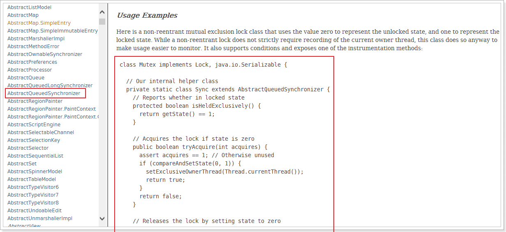
把jdk文档中的案例copy到我们工程中：
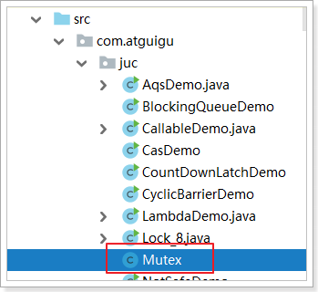
就可以直接使用了：
1 | public class AqsDemo { |
测试效果如下：
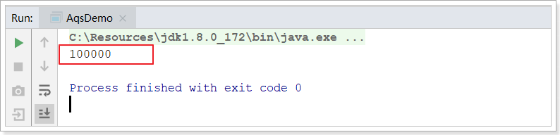
9.4.4. ReentrantLock底层原理
接下来就以ReetrantLock为例，说明AQS在锁底层的应用。
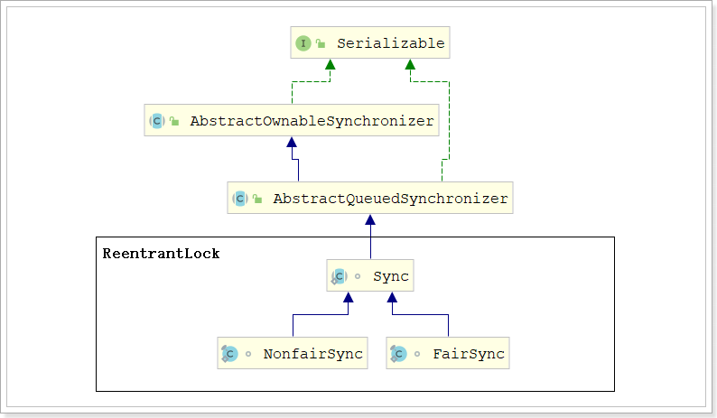
在ReentrantLock类中包含了3个AQS的实现类：
- 抽象类Sync
- 非公平锁实现类NonfaireSync，会直接使用 CAS 进行抢占，修改变量 state 值。如果成功则直接把自己的线程设置到 exclusiveOwnerThread，也就是获得锁成功。
- 公平锁实现类FairSync，不会进行抢占，而是规规矩矩的进行排队。老实人
在ReetrantLock的源码中可以发现：
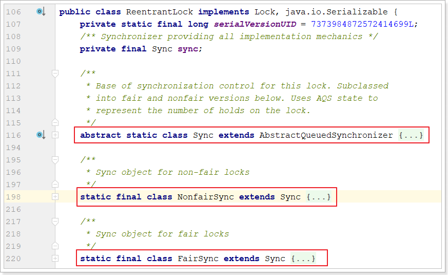
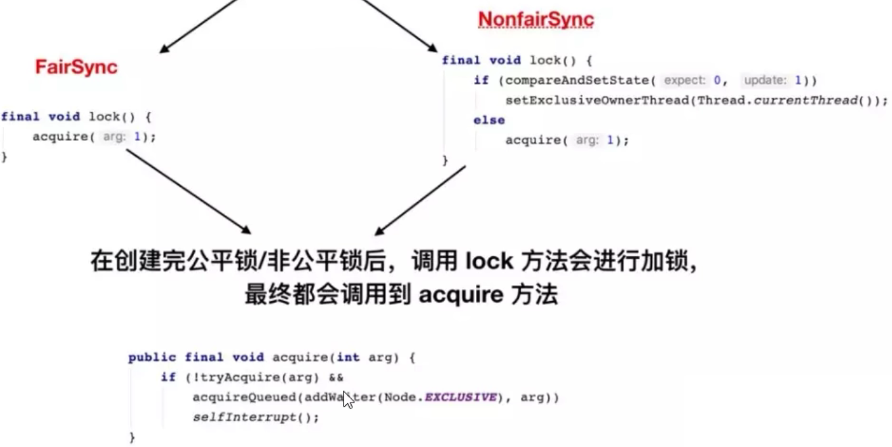
9.4.4.1. Sync抽象类
内部方法主要包括：
1 | /** |
9.4.4.2. NonfairSync
1 | /** |
acquire(1)方法是AQS自己实现的本质就是调用tryAcquire方法，如果tryAcquire获取到锁且无法进入等待队列，则中止线程。
- tryAcquire，分别由继承 AQS 的公平锁（FairSync）、非公平锁（NonfairSync）实现。
- addWaiter，该方法是 AQS 的私有方法，主要用途是方法 tryAcquire 返回 false 以后，也就是获取锁失败以后，把当前请求锁的线程添加到队列中，并返回 Node 节点。
- acquireQueued，负责把 addWaiter 返回的 Node 节点添加到队列结尾，并会执行获取锁操作以及判断是否把当前线程挂起。
- selfInterrupt，是 AQS 中的
Thread.currentThread().interrupt()方法调用，它的主要作用是在执行完 acquire 之前自己执行中断操作。
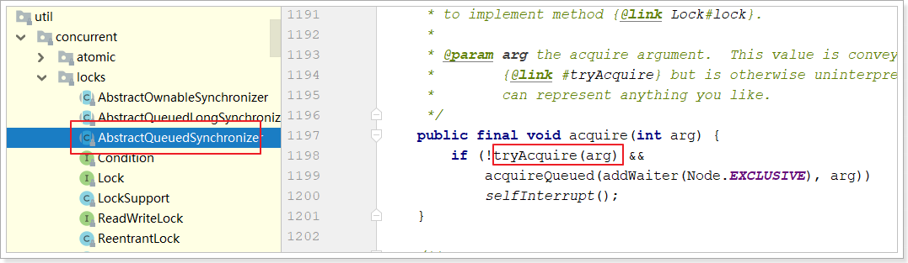
B线程开始抢占，走tryAcquire即nonfairTryAcquire方法，如果返回false，则继续往下走addWaiter。
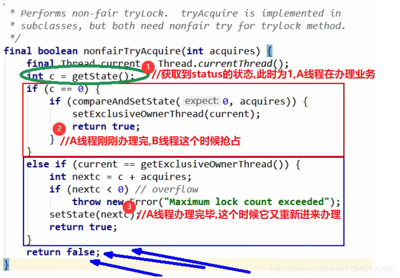
当执行方法 addWaiter，那么就是 !tryAcquire = true，也就是 tryAcquire 获取锁失败了。接下来就是把当前线程封装到 Node 节点中，加入到 FIFO 队列中。因为先进先出，所以后来的队列加入到队尾。
A线程长期占锁，B线程会先enq完成虚拟节点和B结点的创建，之后的C、D、E节点不会走enq方法，因为pred != null了。
下方先设置虚拟节点（哨兵节点），原来指向空的head和tail，都会指向虚拟节点。之后B线程形成的node节点的prev会指向虚拟节点，tail通过CAS从指向虚拟节点再到指向B节点，最后虚拟结点的next会指向B节点。
addWaiter走完，走acquireQueued。
1、2步主要是把前置节点的waitStatus由0改为-1，并挂起自己，即LockSupport.park()。通俗来讲就是在队列里面坐稳，等待唤醒执行。第3步表示线程B或者C已经获取了permit了 。之前前置节点为head时才会进入第3步。
- 如果前一个节点状态是
SIGNAL（当前节点的下一个节点状态已经被挂起），则返回 true。安心睡觉😪等着被叫醒 - 如果前一个节点状态是
CANCELLED（取消排队，放弃获取锁），就是它放弃了，则继续向前寻找其他节点。 - 最后如果什么都没找到，就给前一个节点设置个闹钟
SIGNAL，等着被通知。

unlock( )获取permit，permit包括三个方法：release | tryRelease | unparkSuccessor(h)
当A线程办理好业务，离开的时候，会把傀儡结点的waitStatus从-1改为0 | 将state从1改为0，将当前线程置为null
如果B上位，首先将state从0改为1(表示占用)，把thread置为线程B | 会执行如下图的①②③④，会触发GC，然后就把第一个灰色的傀儡结点给清除掉了，这个时候原来的B结点重新成为傀儡结点
9.4.4.3. FairSync
1 | /** |
hasQueuedPredecessors具体实现如下：
- 当等待队列只有一个线程时，直接获取到锁
- 如果队列不止一个线程，并且下一个线程就是当前申请锁的线程，则获取锁
公平锁与非公平锁的lock()方法唯一的区别 ：多了一个hasQueuedPredecessors() ，即判断等待队列中是否存在有效节点。
9.5. 各种锁
synchronized：偏向锁（偏向第一个线程，效率最高） —> 如果有线程竞争升级为轻量级锁（自旋锁） —> 自旋10次升级为重量级锁（悲观锁）
10. ThreadLocal

ThreadLocalMap有自己的独立实现，可以简单地将它的key视作ThreadLocal，value为代码中放入的值（实际上key并不是ThreadLocal本身，而是它的一个弱引用）
每个线程在往ThreadLocal里放值的时候，都会往自己的ThreadLocalMap里存，读也是以ThreadLocal作为引用，在自己的map里找对应的key，从而实现了线程隔离
内存泄漏
ThreadLocalMap中使用的key为ThreadLocal的弱引用，而value是强引用。所以，如果ThreadLocal没有被外部强引用的情况下，在垃圾回收的时候，key 会被清理掉，而value不会被清理掉。这样一来，ThreadLocalMap 中就会出现key为null的Entry。
假如我们不做任何措施的话，value 永远无法被GC回收，这个时候就可能会产生内存泄露。
ThreadLocalMap实现中已经考虑了这种情况，使用完ThreadLocal方法后最好手动调用remove()方法会清理掉key为null的记录。
12.并发集合
ConcurrentHashMap
- 采用 CAS + Synchronized来保证并发安全进行实现CAS控制数组节点的添加
- synchronized只锁定当前链表或红黑二叉树的首节点，只要hash不冲突，就不会产生并发的问题 , 效率得到提升

4. 并发容器类
面试题：
请举例说明集合类是不安全的。
4.1. 重现线程不安全：List
首先以List作为演示对象，创建多个线程对List接口的常用实现类ArrayList进行add操作。

内容：
1 | public class NotSafeDemo { |
测试结果：

出现了线程不安全错误
ArrayList在多个线程同时对其进行修改的时候，就会抛出java.util.ConcurrentModificationException异常（并发修改异常），因为ArrayList的add及其他方法都是线程不安全的，有源码佐证：

解决方案：
List接口有很多实现类，除了常用的ArrayList之外，还有Vector和SynchronizedList。

他们都有synchronized关键字，说明都是线程安全的。

改用Vector或者synchronizedList试试：
1 | public static void main(String[] args) { |
即可解决！
Vector和Synchronized的缺点：
vector：内存消耗比较大，适合一次增量比较大的情况
SynchronizedList：迭代器涉及的代码没有加上线程同步代码
4.2. CopyOnWrite容器
什么是CopyOnWrite容器
CopyOnWrite容器（简称COW容器）即写时复制的容器。通俗的理解是当我们往一个容器添加元素的时候，不直接往当前容器添加，而是先将当前容器进行Copy，复制出一个新的容器，然后新的容器里添加元素，添加完元素之后，再将原容器的引用指向新的容器。这样做的好处是我们可以对CopyOnWrite容器进行并发的读，而不需要加锁，因为当前容器不会添加任何元素。所以CopyOnWrite容器也是一种读写分离的思想，读和写不同的容器。
从JDK1.5开始Java并发包里提供了两个使用CopyOnWrite机制实现的并发容器，它们是CopyOnWriteArrayList和CopyOnWriteArraySet。
先看看CopyOnWriteArrayList类：发现它的本质就是数组

再来看看CopyOnWriteArrayList的add方法：发现该方法是线程安全的

使用CopyOnWriteArrayList改造main方法：
1 | public static void main(String[] args) { |
CopyOnWrite并发容器用于读多写少的并发场景。比如：白名单，黑名单。假如我们有一个搜索网站，用户在这个网站的搜索框中，输入关键字搜索内容，但是某些关键字不允许被搜索。这些不能被搜索的关键字会被放在一个黑名单当中，黑名单一定周期才会更新一次。
缺点：
- **内存占用问题。**写的时候会创建新对象添加到新容器里，而旧容器的对象还在使用，所以有两份对象内存。通过压缩容器中的元素的方法来减少大对象的内存消耗，比如，如果元素全是10进制的数字，可以考虑把它压缩成36进制或64进制。或者不使用CopyOnWrite容器，而使用其他的并发容器，如ConcurrentHashMap。
- **数据一致性问题。**CopyOnWrite容器只能保证数据的最终一致性，不能保证数据的实时一致性。所以如果你希望写入的的数据，马上能读到，请不要使用CopyOnWrite容器。
4.3. 扩展类比：Set和Map
HashSet和HashMap也都是线程不安全的，类似于ArrayList，也可以通过代码证明。
1 | private static void notSafeMap() { |
都会报：ConcurrentModificationException异常信息。
Collections提供了方法synchronizedList保证list是同步线程安全的，Set和Map呢？

JUC提供的CopyOnWrite容器实现类有：CopyOnWriteArrayList和CopyOnWriteArraySet。
有没有Map的实现：

最终实现：
1 | public class NotSafeDemo { |
扩展：HashSet底层数据结构是什么？HashMap ?
但HashSet的add是放一个值，而HashMap是放K、V键值对


5. JUC强大的辅助类
JUC的多线程辅助类非常多，这里我们介绍三个：
- CountDownLatch（倒计数器）
- CyclicBarrier（循环栅栏）
- Semaphore（信号量）

5.1. CountDownLatch
CountDownLatch是一个非常实用的多线程控制工具类，应用非常广泛。
例如：在手机上安装一个应用程序，假如需要5个子进程检查服务授权，那么主进程会维护一个计数器，初始计数就是5。用户每同意一个授权该计数器减1，当计数减为0时，主进程才启动，否则就只有阻塞等待了。
CountDownLatch中count down是倒数的意思，latch则是门闩的含义。整体含义可以理解为倒数的门栓，似乎有一点“三二一，芝麻开门”的感觉。CountDownLatch的作用也是如此。
常用的就下面几个方法：
1 | new CountDownLatch(int count) //实例化一个倒计数器，count指定初始计数 |
案例：6个同学陆续离开教室后值班同学才可以关门。

1 | public class CountDownLatchDemo { |
打印结果：
1 | 同学3 出来了 |
面试：CountDownLatch 与 join 方法的区别
调用一个子线程的 join()方法后，该线程会一直被阻塞直到该线程运行完毕。而 CountDownLatch 则使用计数器允许子线程运行完毕或者运行中时候递减计数，也就是 CountDownLatch 可以在子线程运行任何时候让 await 方法返回而不一定必须等到线程结束；另外使用线程池来管理线程时候一般都是直接添加 Runnable 到线程池这时候就没有办法在调用线程的 join 方法了，countDownLatch 相比 Join 方法让我们对线程同步有更灵活的控制。
练习：秦灭六国，一统华夏。（模仿课堂案例，练习枚举类的使用）
5.2. CyclicBarrier
从字面上的意思可以知道，这个类的中文意思是“循环栅栏”。大概的意思就是一个可循环利用的屏障。该命令只在每个屏障点运行一次。若在所有参与线程之前更新共享状态，此屏障操作很有用
常用方法：
- CyclicBarrier(int parties， Runnable barrierAction) 创建一个CyclicBarrier实例，parties指定参与相互等待的线程数，barrierAction一个可选的Runnable命令，该命令只在每个屏障点运行一次，可以在执行后续业务之前共享状态。该操作由最后一个进入屏障点的线程执行。
- CyclicBarrier(int parties) 创建一个CyclicBarrier实例，parties指定参与相互等待的线程数。
- await() 该方法被调用时表示当前线程已经到达屏障点，当前线程阻塞进入休眠状态，直到所有线程都到达屏障点，当前线程才会被唤醒。
案例：组队打boss过关卡游戏。

1 | public class CyclicBarrierDemo { |
输出：
1 | 1 开始第一关 |
注意：所有的"过关了"都是由最后到达await方法的线程执行打印的
面试：CyclicBarrier和CountDownLatch的区别？
CountDownLatch的计数器只能使用一次，而CyclicBarrier的计数器可以使用reset()方法重置，可以使用多次，所以CyclicBarrier能够处理更为复杂的场景；CountDownLatch允许一个或多个线程等待一组事件的产生，而CyclicBarrier用于等待其他线程运行到栅栏位置。
5.3. Semaphore
Semaphore翻译成字面意思为 信号量，Semaphore可以控制同时访问的线程个数。非常适合需求量大，而资源又很紧张的情况。比如给定一个资源数目有限的资源池，假设资源数目为N，每一个线程均可获取一个资源，但是当资源分配完毕时，后来线程需要阻塞等待，直到前面已持有资源的线程释放资源之后才能继续。
常用方法：
1 | public Semaphore(int permits) // 构造方法，permits指资源数目（信号量） |
信号量主要用于两个目的：
- 多个共享资源的互斥使用。
- 用于并发线程数的控制。保护一个关键部分不要一次输入超过N个线程。
案例：6辆车抢占3个车位

1 | public class SemaphoreDemo { |
打印结果：
1 | 0 抢到了一个停车位！！ |
6. Callable接口
Thread类、Runnable接口使得多线程编程简单直接。
但Thread类和Runnable接口都不允许声明检查型异常，也不能定义返回值。没有返回值这点稍微有点麻烦。不能声明抛出检查型异常则更麻烦一些。
**public void run()**方法规范意味着你必须捕获并处理检查型异常。即使你小心捕获异常，也不能保证这个类（Runnable对象）的所有使用者都读取异常信息。
以上两个问题现在都得到了解决。从java5开始，提供了Callable接口，是Runable接口的增强版。用Call()方法作为线程的执行体，增强了之前的run()方法。因为call方法可以有返回值，也可以声明抛出异常。
6.1. Callable和Runable对比
先初步认识一下Callable接口：

这是一个函数式接口，因此可以用作lambda表达式或方法引用的赋值对象。
具体代码实现对比：创建一个CallableDemo.java

内容：
1 | class MyRunnableThread implements Runnable{ |
该如何使用Callable创建Thread对象，如果使用Runnable是：
1 | public class CallableDemo { |
现在能不能直接把MyRunnableThread换成MyCallableThread。当然不行，thread的构造方法参数需要Runnable类型的数据模型，而MyCallableThread属于Callable类型的。
那么到底怎么使用Callable创建thread对象呢？
6.2. Callable的使用
这里需要一个FutureTask，先认识该类，上源码：

发现：FutureTask其实可以充当了一个中间人的角色
1 | /** |
FutureTask：未来的任务，用它就干一件事，异步调用。通常用它解决耗时任务，挂起堵塞问题。
在主线程中需要执行比较耗时的操作时，但又不想阻塞主线程时，可以把这些作业交给Future对象在后台完成，当主线程将来需要时，就可以通过Future对象获得后台作业的计算结果或者执行状态。
一般FutureTask多用于耗时的计算，主线程可以在完成自己的任务后，再去获取结果。
FutureTask仅在call方法完成时才能get结果；如果计算尚未完成，则阻塞 get 方法。
一旦计算完成，就不能再重新开始或取消计算。get方法获取结果只有在计算完成时获取，否则会一直阻塞直到任务转入完成状态，然后会返回结果或者抛出异常。
注意：
- 为了防止主线程阻塞，建议get方法放到最后
- 只计算一次，FutureTask会复用之前计算过得结果
创建多个线程，会怎样？

运行结果：依然只有一个就是threadName。
如果想打印threadName2的结果，即不想复用之前的计算结果。怎么办？再创建一个FutureTask对象即可。
6.3. 面试题
面试题：callable接口与runnable接口的区别？
相同点：都是接口，都可以编写多线程程序，都采用Thread.start()启动线程
不同点：
- 具体方法不同：一个是run，一个是call
- Runnable没有返回值；Callable可以返回执行结果，是个泛型
- Callable接口的call()方法允许抛出异常；Runnable的run()方法异常只能在内部消化，不能往上继续抛
- 它提供了检查计算是否完成的方法，以等待计算的完成，并检索计算的结果。
面试题：获得多线程的方法几种？
（1）继承thread类（2）runnable接口
如果只回答这两个你连被问到juc的机会都没有
正确答案如下：
传统的是继承thread类和实现runnable接口
java5以后又有实现callable接口和java的线程池获得
7. 阻塞队列（BlockingQueue）
栈与队列简单回顾：
栈：先进后出，后进先出
队列：先进先出
7.1. 什么是BlockingQueue
在多线程领域：所谓阻塞，在某些情况下会挂起线程（即阻塞），一旦条件满足，被挂起的线程又会自动被唤起
BlockingQueue即阻塞队列，是java.util.concurrent下的一个接口，因此不难理解，BlockingQueue是为了解决多线程中数据高效安全传输而提出的。从阻塞这个词可以看出，在某些情况下对阻塞队列的访问可能会造成阻塞。被阻塞的情况主要有如下两种：
- 当队列满了的时候进行入队列操作
- 当队列空了的时候进行出队列操作
因此，当一个线程试图对一个已经满了的队列进行入队列操作时，它将会被阻塞，除非有另一个线程做了出队列操作；同样，当一个线程试图对一个空队列进行出队列操作时，它将会被阻塞，除非有另一个线程进行了入队列操作。
阻塞队列主要用在生产者/消费者的场景，下面这幅图展示了一个线程生产、一个线程消费的场景：

为什么需要BlockingQueue
好处是我们不需要关心什么时候需要阻塞线程，什么时候需要唤醒线程，因为这一切BlockingQueue都给你一手包办了。在concurrent包发布以前，在多线程环境下，我们每个程序员都必须去自己控制这些细节，尤其还要兼顾效率和线程安全，而这会给我们的程序带来不小的复杂度。
7.2. 认识BlockingQueue
java.util.concurrent 包里的 BlockingQueue是一个接口，继承Queue接口，Queue接口继承 Collection。

BlockingQueue接口主要有以下7个实现类：
- ArrayBlockingQueue：由数组结构组成的有界阻塞队列。
- LinkedBlockingQueue：由链表结构组成的有界（但大小默认值为integer.MAX_VALUE）阻塞队列。
- PriorityBlockingQueue：支持优先级排序的无界阻塞队列。
- DelayQueue：使用优先级队列实现的延迟无界阻塞队列。
- SynchronousQueue：不存储元素的阻塞队列，也即单个元素的队列。
- LinkedTransferQueue：由链表组成的无界阻塞队列。
- LinkedBlockingDeque：由链表组成的双向阻塞队列。
BlockingQueue接口有以下几个方法：

它的方法可以分成以下4类：
| 抛出异常 | 特殊值 | 阻塞 | 超时 | |
|---|---|---|---|---|
| 插入 | add(e) | offer(e) | put(e) | offer(e, time, unit) |
| 移除 | remove() | poll() | take() | poll(time, unit) |
| 检查 | element() | peek() | 不可用 | 不可用 |
抛出异常
add正常执行返回true，element（不删除）和remove返回阻塞队列中的第一个元素
当阻塞队列满时，再往队列里add插入元素会抛IllegalStateException:Queue full
当阻塞队列空时，再往队列里remove移除元素会抛NoSuchElementException
当阻塞队列空时，再调用element检查元素会抛出NoSuchElementException
特定值
插入方法，成功ture失败false
移除方法，成功返回出队列的元素，队列里没有就返回null
检查方法，成功返回队列中的元素，没有返回null
一直阻塞
如果试图的操作无法立即执行，该方法调用将会发生阻塞，直到能够执行。
当阻塞队列满时，再往队列里put元素，队列会一直阻塞生产者线程直到put数据or响应中断退出
当阻塞队列空时，再从队列里take元素，队列会一直阻塞消费者线程直到队列可用
超时退出
如果试图的操作无法立即执行，该方法调用将会发生阻塞，直到能够执行，但等待时间不会超过给定值。
返回一个特定值以告知该操作是否成功(典型的是 true / false)。
7.3. 代码演示
创建BlockingQueueDemo类：

1 | public class BlockingQueueDemo { |